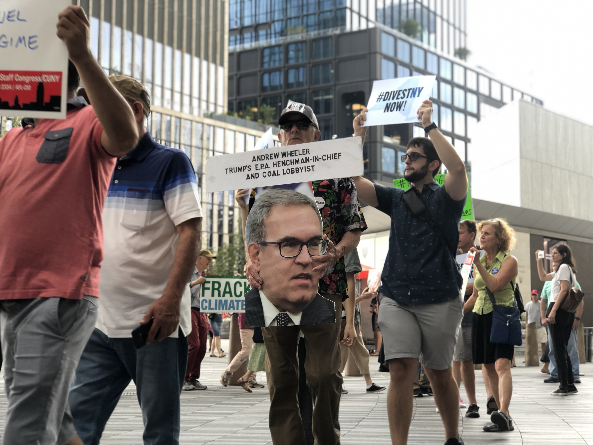
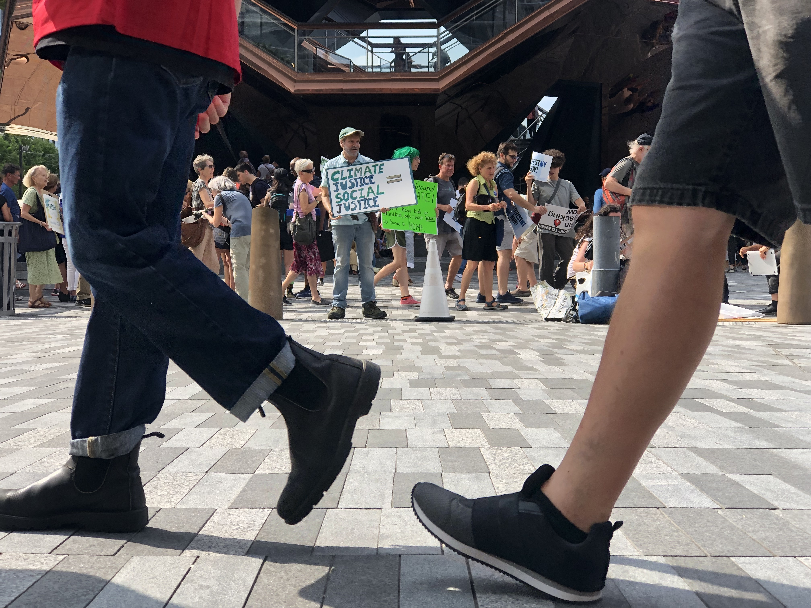
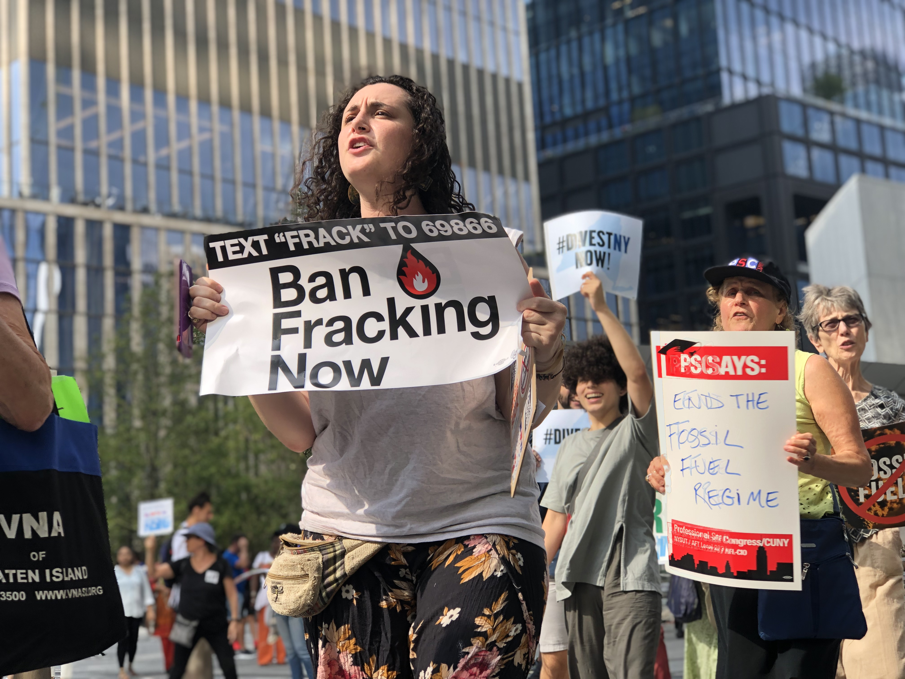

HUDSON YARDS – As the leading Democratic presidential contenders prepared to discuss climate issues at CNN’s climate crisis town hall on Tuesday evening, images of Hurricane Dorian’s environmental destruction filled most news networks’ evening programming.
Simultaneously, more than 100 environmental activists gathered outside of CNN’s Hudson Yards studio to call on both the candidates and media professionals to take bold preventative and restorative action toward environmental sustainability.
“Record-breaking storms like Hurricane Harvey and Hurricane Dorian, which we just saw in the Bahamas, are the results and will continue to be the results of increased climate change,” New York Communities for Change climate organizer Patrick Houston said. “The media should do a better, consistent job drawing those connections so that everyday people in the public can understand them and begin to work toward solutions.”
Likewise, Brooklyn senior organizer Eric Weltman said on behalf of Food & Water Action that the media could be doing more to facilitate environmental sustainability like examining the problems and hazards associated with climate change, highlighting corporations that stand in the way of solutions and defining what those solutions actually are. 
“Climate change is perhaps the greatest crisis that humanity is facing,” Weltman said. “It would be extremely difficult perhaps for the media to really do it justice, but people need sophisticated analyses of the problem, the obstacles that we are facing and their solutions.”
Food & Water Action proposes moving toward environmental energy alternatives and banning fracking and fossil fuel infrastructure entirely.
Many demonstrators drew a distinction between what they consider mainstream and alternative media organizations.
“The mainstream media is not doing a good job covering the climate crisis because they aren’t treating it as an emergency,” Eastchester teacher Veronique Musselman said. “The so-called alternative media like Democracy Now! and MoveOn are doing more to draw people’s interest and make them realize we can’t wait and that we need to do something really drastic as soon as possible.”
For Houston, the matter is more urgent than bipartisan compromise.
“We cannot continue with business as usual,” Houston said. “Not only business as usual in how tied our society is to fossil fuels, but also in terms of trying to find a middle ground on this issue. Science has given us no middle ground. When Dorian slammed the Bahamas yesterday, it wasn’t concerned with a middle ground.”
Similarily, youth organizer and NYU politics and economics sophomore Shiv Soin said inching toward environmental justice is not enough action from candidates.
“Incrementalism is more damaging than not releasing a plan, honestly,” he said. “I’d rather people say they don’t care rather than saying they care a little bit. It’s just as damaging as doing nothing.” 
The demonstration - organized by a number of local and national organizations like People’s Climate Movement NY, Food & Water Action, Rise and Resist, New York Communities for Change and New York State Nurses Association - is only one of various strikes the coalition has planned.
On Sept. 20 - the second anniversary of Hurricane Maria, from which Puerto Rico is still recovering - climate strikes led by youth activists like Soin will take place around the world. In New York, it will begin at noon in Foley Square.
“We want to have as many people as possible of all ages raise their voices and urge elected officials to take action,” Houston said. “We need action that matches science and brings historic justice and future justice for all of those that have been and will be hurt by this climate crisis.”

GreenPeace, an independent global organization dedicated to fighting climate change, has developed a candidate scorecard for 2020 presidential candidates based on questions they asked them regarding the climate crisis.
GreenPeace gave each candidate a rating ranging from A+ to F, but the major Democratic candidates all earned ratings above a C+. Based on GreenPeace's rating, I assigned them a number of globes. Here's a key:
| Score | Number of globes |
|---|---|
| A | 
|
| A- |
|
| B+ |
|
| B |
|
| B- |
|
| C+ |
|
This is how the major Democratic candidates measured up:
| Candidate | GreenPeace Rating |
|---|---|
| Bernie Sanders |
|
| Elizabeth Warren |
|
| Tom Steyer |
|
| Cory Booker |
|
| Kamala Harris |
|
| Julian Castro |
|
| Joe Biden |
|
| Tulsi Gabbard |
|
| Pete Buttigieg |
|
| Marianne Williamson |
|
| Beto O'Rourke |
|
| Amy Klobuchar |
|
| Andrew Yang |
|
Visit GreenPeace's website to read more in-depth descriptions of what each candidate is or isn't doing in regards to climate.
Icon and background image made by Freepik from www.flaticon.com
Background image